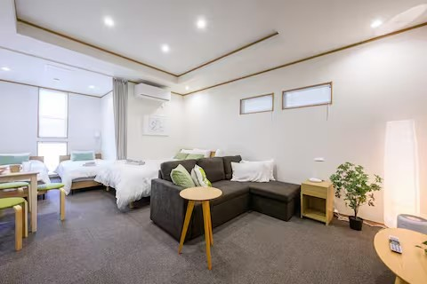
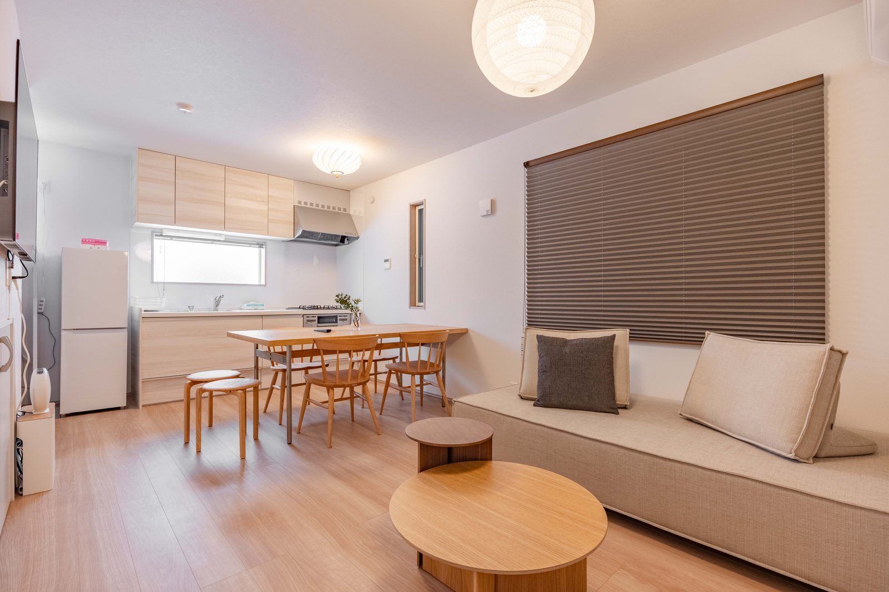

東京・墨田区の一棟貸し民泊（最大10名） Private whole-house vacation rentals in Sumida, Tokyo (sleeps up to 10) 东京·墨田区的整栋出租民宿（最多10人） 도쿄·스미다구의 통째 대여 민박 (최대 10명)

Higashi-Komagata · Asakusa
本所吾妻橋最寄り。浅草・雷門まで徒歩約10分、スカイツリーも徒歩圏。下町情緒の一棟貸し。 Near Honjo-Azumabashi — a 10-min walk to Senso-ji's Kaminarimon, walking distance to Skytree. A whole-house stay in old-town Tokyo. 邻近本所吾妻桥。步行约10分钟到浅草雷门，晴空塔也在步行范围。下町风情的整栋出租。 혼조아즈마바시 인근. 센소지 가미나리몬 도보 약 10분, 스카이트리도 도보권. 옛 정취의 통째 대여.
光明荘をみる →View Komei Hotel →查看光明庄 →코메이 보기 →
Oshiage (Skytree) · Hikifune
押上〈スカイツリー前〉駅 徒歩約8分（A3出口）／曳舟駅 徒歩約6分。東京スカイツリー直結、浅草まで約4分、羽田・成田へ直通。3階建て・屋上テラス付きの一棟貸し。 8-min walk from Oshiage (Skytree) Sta. (exit A3), 6 min from Hikifune. Right by Tokyo Skytree, ~4 min to Asakusa, direct to Haneda & Narita. A 3-floor house with a rooftop terrace. 距押上〈晴空塔前〉站步行约8分钟（A3出口）、曳舟站约6分钟。紧邻东京晴空塔，到浅草约4分钟，直达羽田、成田。3层带屋顶露台的整栋出租。 오시아게〈스카이트리 앞〉역 도보 약 8분(A3 출구), 히키후네역 약 6분. 도쿄 스카이트리 바로 옆, 아사쿠사 약 4분, 하네다·나리타 직통. 3층·옥상 테라스 통째 대여.
天見庵をみる →View Tenmian →查看天见庵 →天見庵 보기 →